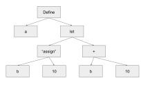

Programming languages can be split along many different axes, and you've probably heard of a couple of them1. The difference that matters here is compiled vs interpreted. A compiled language is read by a compiler, which transforms your program into machine code to later be executed. An interpreter on the other hand, is a program which, very meta, runs a program in the language of choice. A common example of an interpreted language is python. If we write a program
def main():
print ("hello!")
save it into a file hello.py, and then run python hello.py in the command
line, the program python will read the lines in our program, and directly run
our program, producing the output "hello!" One of the beauties of lisp is that
it's easy, and we'll explain why in a bit, to build interpreters for. In fact,
even though the task may seem daunting, the introductory book Structure and
Interpretation of Computer Programs2, builds up to a very simple interpreter.
I have some time on my hands, and I wanted to learn more about programming
languages, so I gave a shot at building one.
There's roughly 3 stages to writing an interpreter:
It feels unfair to split these three as such, since the third step is by far the largest. Now that we know the names of each step, let's actually do the darn thing.
In this step we want to break down the program into the smallest syntactical elements -- that is, to the smallest elements with any meaning. We refer to these units as tokens3. Similar to the English language, our program's smallest elements are the words or numbers, broken up by spaces, and since we're talking about lisp, also parentheses. For example, if we have:
(define x 10)
we want our tokenized program to be:
['(', 'define', 'x', 10, ')']
We mostly do this step to make the AST easier to build, and to remove any non-syntactical elements from our program, such as comments and white space. This step is otherwise mostly mechanical.
Now let's learn about Abstract Syntax Trees! First, let's start by looking at an example. Let's say we have the simple program:
(define a
(let ((b 10))
(+ b 10)))
(This is a contrived program, it doesn't do anything useful lol). We'll then have the syntax tree:
['define', 'a', ['let', [['b', 10]], ['+', 'b', 10]]]
Or graphically:

This is called an "abstract syntax" tree, since it is a tree that shows some sort of abstract relationship between the elements in the tree -- or in other words, an abstract syntax.
The astute reader might also notice that we added an "assign" operation to the graphical representation of the tree. We do that to denote that ['b', 10] is an assignment operation rather than an application of the function b
:::{aside} test thing :::
Now we're almost at a small interpreter!
This next step, the evaluation step, takes the AST and actually makes it work. As I said, it's a lot of work glossed over rather fast lol. Take our previous toy ast:
(define a
(let ((b 10))
(+ b 10)))
Our evaluator would then run through this tree seeing "ok, we're calling a define operation on a and the subtree to the right," since we want to know what's going on in the sub tree to the right, we have to then evaluate that tree also. We do that recursively until we reach the atomic units of our program -- in the case of our toy lisp either numbers or strings -- and we're there!
Now how does all of this look in code you ask? Stay tuned for the next post!
For simplicity, I'm saying that the /language/ is either interpreted or compiled. In actuality, it's implementation dependent. One could have a compiled python (cython for example), but often people talk about the language as the main implementation of the language. ↩
If you haven't given it a read, I recommend it! It's a great book. I'll explain some lisp here, but if you want to learn more I recommend giving this book a read. ↩
You might have heard about this term now with the AI craze. Tokens there are still a small syntactical element, but they aren't necessarily a word. AIs work differently to humans and sometimes understand things in different sizes than words. ↩